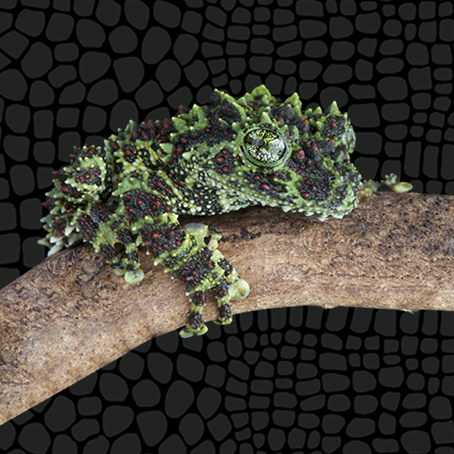
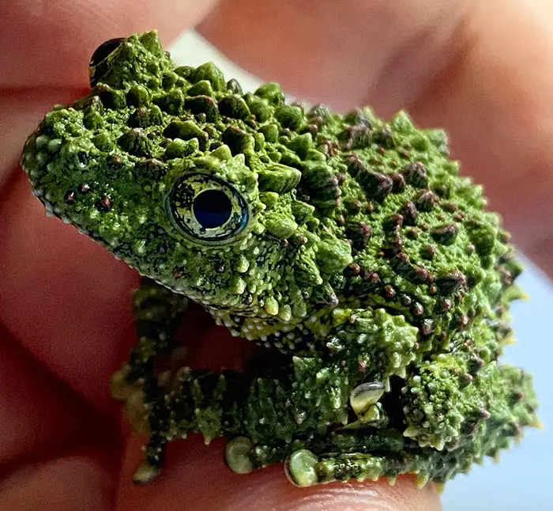
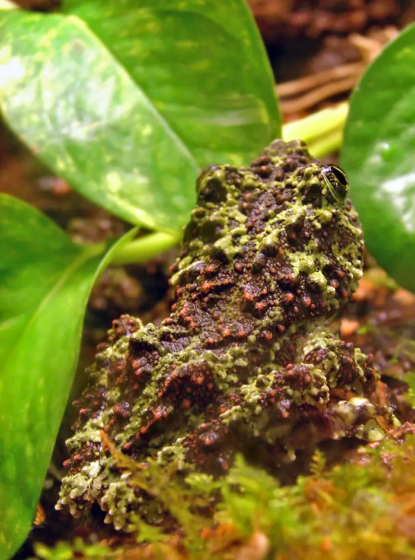
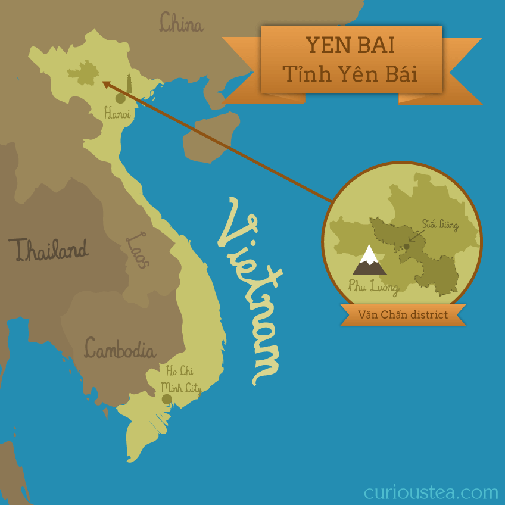

Description
They resemble a mossy clump due to their green skin and black spots that can be seen on their tubercules and spines. They usually hide in basins of water only sticking their eyes out making it almost impossible to spot one.
Conservation
The Vietnamese Mossy Frog is listed as least concern by the IUCN. They are popular in the pet trade and is now widely captive-bred, which has eased pressure from wild collection.

Behavior
Once they settle into an environment they start becoming very active. They burrow in soft muddy areas.

Habitat
Moist, lowland evergreen tropical or montane rainforests and woodlands, and the adjacent caves and rocky cliffs in South-East Asia

Average Size: Up to 3.5 inches (7-8 centimeters) Lifespan: Unknown, probably ten years. Diet: large insects such as crickets and cockroaches Clutch Size: 30-50 eggs
Incubation: 1-2 weeks Sexual Maturity: 2-3 years Predators: Fire-bellied snake